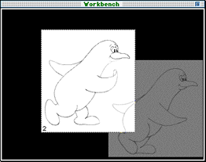
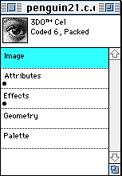
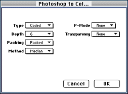

Click on one ot the following topics to select it:
Whatever files are displayed on the Workbench are also displayed on the television monitor. Changes that occur on the Workbench occur at the simultaneously in both displays. Figure 1 shows two cels displayed on the Workbench.

Figure 1: Workbench window.
You can display multiple cels on the Workbench simultaneously and change the order in which they are layered on the screen, using the Workbench menu options. The cel that is foremost on the display shows its number in its lower left corner.
Document windows
A Document window appears for each file you open in 3DO PostPro, even if it is in a format that cannot be displayed on the Workbench.
Drag the Document Proxy onto the Workbench to display a 3DO file on the Workbench, as well as on the television display monitor. Figure 2 shows a close-up of the Document Proxy from the Document window.
Figure 1: Document Proxy.
Document windows differ according to the file type. Figure 4-2 shows Document windows for a coded-6 cel and an image cel. The coded-6 cel window has several categories listed, while the image does not. The categories with the dots are the ones that are active for that file.
Double-clicking on an active category in the Window list, brings up a related editor. Currently, only the Attributes and Effects editors are supported. These editors are covered in Editors.

Figure 2: Document windows for a cel and an image.
Photoshop to Cel dialog
The Photoshop to Cel dialog appears when you select Convert to Cel from the Document menu. This dialog allows you to define the cel type and its characteristics. Figure 3 shows the Photoshop to Cel dialog for a coded-6, packed cel. P-Mode is set to off and there is no specified transparency. The method for conversion is set at the default: Median.

Figure 3: Photoshop to cel dialog.
With this dialog you have the options to: